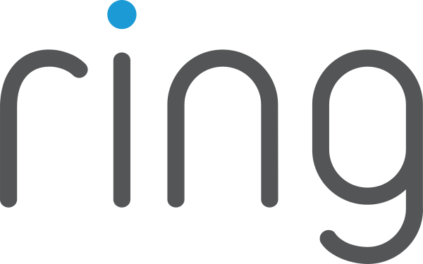

Hands-on training
Once admitted, you get entrepreneurial resources through Draper University, plus progress checks on your idea and pitch along the way.
Fall 2026 · Exclusively for Stanford students
until applications close, Saturday September 26
The program
The Draper Fellowship is an off-campus startup accelerator. A small cohort from Stanford spends the fall quarter incubating their ideas and learning how VCs and founders think, then pitches for real funding.
Once admitted, you get entrepreneurial resources through Draper University, plus progress checks on your idea and pitch along the way.
Meet venture capitalists, angel investors, and founders at networking events, open houses, and speaker sessions all quarter.
Top teams receive real funding to take their ideas to market, decided by a Draper Associates panel led by Tim Draper.
Whether you already have an idea and are looking for a platform to build on, or don’t yet have a vision, this program could serve you well.
Tim Draper is known for his investments in



Timeline
Read everything on this page first, then submit your application. Only apply if you can attend the required events on October 7 and November 19.
Decisions go out the week after applications close.
Kickoff at Hero City in San Mateo, featuring Draper Associates venture capitalists as speakers. If you’re not already on a team, you will assemble into teams by this day.
Do not submit an application unless you are able to make it to this event.
Pitch to the Draper University team. This is your rehearsal before the real thing.
Survival Training. The top two teams earn a spot in a secret program that tests an entrepreneur’s mind, body, and soul alongside the Draper University team. Tim goes too.
The big day. All teams go to Hero City and pitch to a Draper Associates panel led by Tim Draper. The top three teams receive funding.
Funding
Even if you don’t get funding, you walk away an alumnus of the program, having learned how VCs and founders think, and with a great network to support you.
Before you apply